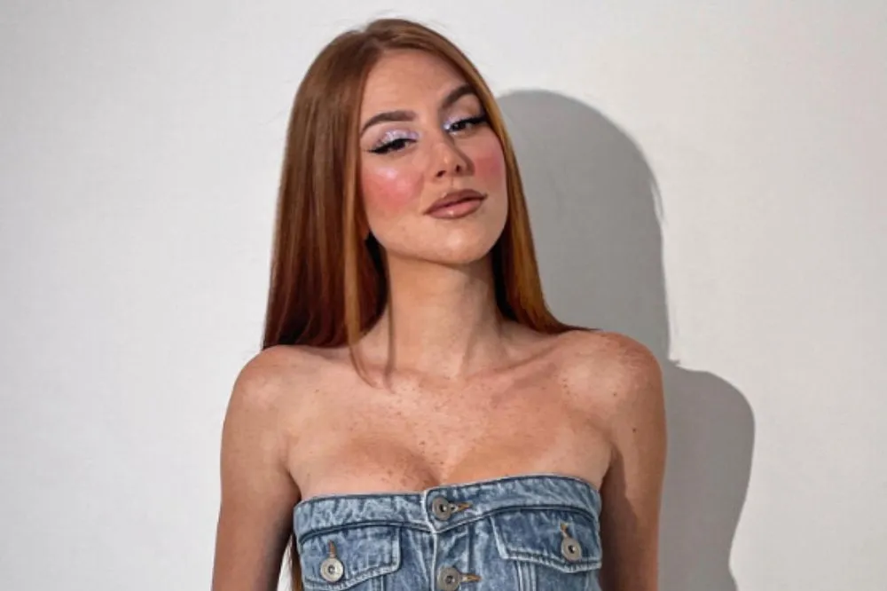

Carreira e Trajetória Início no YouTube (2014): Começou criando conteúdo de maquiagem, destacando-se pela autenticidade e tutoriais, acumulando milhões de seguidores ao longo de mais de uma década. Formação: É formada em estética e cosmetologia. Empreendedorismo (Mari Maria Makeup): Fundou sua própria marca de maquiagem ao lado de seu marido, Rudy, com foco inicial em produtos para a pele, evoluindo para um negócio que cresceu 400% em 2024. Reconhecimento: Foi destaque na lista Forbes Top Creators e é considerada uma das influenciadoras mais bem pagas do mercado. Expansão: Além de maquiagem, lançou a linha Mari Maria Hair Mari Maria Makeup (Produtos) A marca "Mari Maria Makeup" é conhecida por desenvolver produtos focados em alta performance, inovação e tecnologia, frequentemente com consultoria especializada para tons de pele. Pincel Triangular: Um de seus maiores sucessos e produtos patenteados, que se tornou marca registrada. Bases Velvet Skin: Inicialmente lançadas com 12 tons, a linha foi expandida para 36 tons após estudos, buscando cobrir tonalidades neutras, rosadas e amareladas. Portfólio Completo: Inclui corretivos, batons mate, sombras, iluminadores e outros itens de preparação de pele. Embalagens: Desenvolvidas com a Antilhas, referência na América Latina. Diferencial: A marca é conhecida pela cor laranja vibrante em suas embalagens e campanhas.
